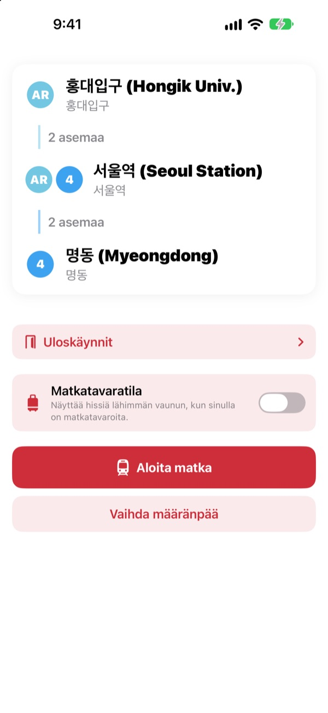
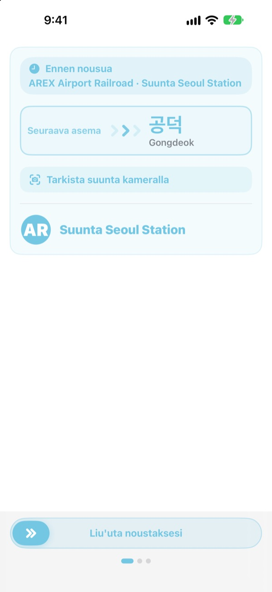
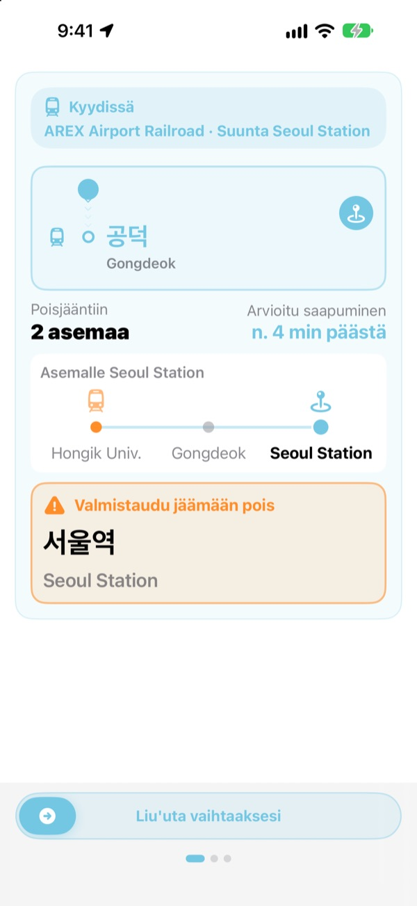
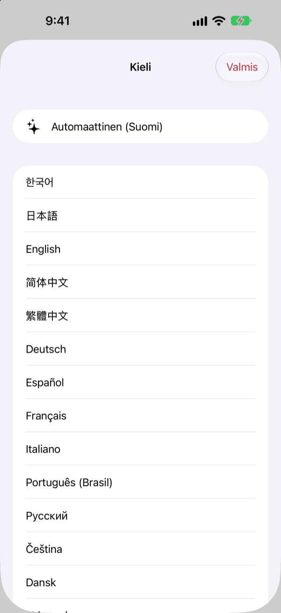

Oikea laituri.
Oikea asema.
Valitse lähtö- ja määräasema, niin KORA kertoo, mihin junaan nousta, juuri niin kuin laiturin kyltissä lukee. Matkan aikana se seuraa asemaasi ja kertoo, milloin jäädä pois.
Reittihaku, ajosuunta ja reaaliaikaiset saapumiset ovat ilmaisia.

Kokeile matkaa
Olet Hongik Univ. -asemalla AREX-linjalla. Valitse, missä jäät pois, ja napauta Aloita matka. Näet junan suunnan ja poisjäämisilmoitukset niin kuin sovelluksessa.
Oletko seissyt laiturilla tietämättä, mihin junaan nousta?
Karttasovellukset kertovat linjan, mutta laiturilla on vain kylttejä, joissa on ennestään tuntemattomia asemien nimiä. Väärään suuntaan noustessa joudut palaamaan monta asemaa. Kuulutuksen ohi mennessä ajat ohi omasta asemastasi. KORA nimeää junasi samoin kuin kyltti ja varoittaa ennen asemaasi.
Samoin sanoin kuin kyltissä
Oikea juna näytetään juuri niin kuin sen määränpää lukee laiturilla ja junassa. Epäilyttääkö? Suuntaa kamera laiturin kylttiin tai junan määränpääkylttiin, niin KORA kertoo heti, onko suunta oikea.
Teksti tunnistetaan kokonaan iPhonessasi.

Et enää aja ohi
KORA yhdistää reaaliaikaiset saapumiset, GPS:n, junan lähdöt ja pysähdykset sekä junan kuulutukset tietääkseen, missä olet. Kun asemasi lähestyy, saat ilmoituksen ”Valmistaudu jäämään pois” ja sitten ”Jää pois nyt!” värinän kera.
Matkan eteneminen näkyy myös lukitusnäytöllä ja Dynamic Islandissa.

23 kieltä, korealaiset nimet tallessa
Koko sovellus toimii 23 kielellä ja käynnistyy iPhonesi kielellä. Asemien nimet näkyvät koreaksi kylttien latinalaisen kirjoitusasun vieressä, joten tunnistat ne laiturilla heti.

Alkuun kolmessa vaiheessa
- 1
Aseta lähtö
GPS löytää lähimmän aseman, tai valitse itse.
- 2
Valitse määränpää
Vaihdot, asemat ja oikea juna näkyvät heti.
- 3
Napauta Aloita matka
Näyttö ja värinä kertovat, milloin jäädä pois.
Mihin luvat tarvitaan
- Sijainti
- Lähimmän aseman löytäminen
- Kamera
- Kylttien ja määränpääkylttien lukeminen suunnan tarkistamiseksi
- Mikrofoni ja puheentunnistus
- Aseman nimen ja oven puolen poimiminen junan kuulutuksista
- Liike ja kunto
- Lähtöjen ja pysähdysten tunnistaminen, jotta nykyinen asema on tarkempi
Kaikki luvat ovat vapaaehtoisia. Ilman niitä valitset asemat itse ja saat silti reitin ja poisjäämisilmoitukset. Sijainti, kamera ja kuulutukset käsitellään laitteella, eikä niitä koskaan tallenneta, säilytetä tai lähetetä.
Reitin löytäminen on aina ilmaista. Opastus matkan aikana on KORA Pro.
Ilmainen
- Reittihaku ja vaihdot
- Oikean junan määränpääkyltti
- Reaaliaikaiset saapumiset
- Suunnan tarkistus kameralla
- Nykyinen asema ja poisjäämisilmoitus näytöllä
- Kaikki Pro-ominaisuudet kolmella ensimmäisellä matkalla
KORA Pro
- Jokaisella matkalla: opastus lukitusnäytöllä, kuulutusten tunnistus ja värinä poisjäädessä
- Uloskäynnit: mitä kunkin uloskäynnin lähellä on Soulin linjoilla 1–8
- Muistutus viimeisestä junasta linjoilla 1–9
- Matkatavaratila: hissiä lähin vaunu linjoilla 1–8
Maksat kerran ja pidät sen. Ei tilausta.
Kun ilmaiset matkat on käytetty, voit silti matkustaa. Eteneminen näytöllä pysyy, vain lukitusnäyttö, kuulutusten tunnistus ja värinä pitävät taukoa.
Usein kysyttyä
Sovellus ei löydä asemaani tai näyttää väärän.
Avaa Asetukset > Tietosuoja ja suojaus > Sijaintipalvelut > KORA, valitse ”Kun appia käytetään” ja laita ”Tarkka sijainti” päälle. Maan alla tai isoissa rakennuksissa GPS voi heittää: napauta ylhäällä nykyisen aseman korttia ja valitse itse. Kaikki toimii myös ilman sijaintilupaa.
Miten suunnan tarkistus kameralla toimii?
Kun reitti näkyy, avaa suunnan tarkistus ja täytä kuva laiturin kyltillä tai junan määränpääkyltillä. Korealainen teksti toimii parhaiten. Jos kyltti on hämärä, kaukana tai hyvin vinossa, mene lähemmäs ja kuvaa suoraan edestä. Tulos on apuväline, joten katso epävarmana myös aseman kylttejä.
Reaaliaikaiset saapumiset eivät näy.
Tiedot tulevat Seoul Open Data Plazasta, vaativat verkkoyhteyden ja ovat saatavilla lähinnä Soulin seudun linjoilla. Ilman yhteyttä tai reaaliaikaisia tietoja KORA siirtyy automaattisesti aikatauluun, GPS:ään ja kiihtyvyysanturiin perustuvaan arvioon ja jatkaa opastusta. Reittihaku toimii ilman verkkoa.
Poisjäämisilmoitus tuli vähän liian aikaisin tai myöhään.
Maan alla GPS on heikko, joten nykyinen asema voi laahata perässä. Kun sallit mikrofonin, KORA korjaa sijaintia junan kuulutusten perusteella. Ilmoitukset ovat apuväline, joten kuuntele myös kuulutuksia ja seuraa kylttejä.
Miten vaihdan kielen?
KORA käynnistyy iPhonesi kielellä. Pidä päänäkymässä asemakorttia painettuna (nykyinen asema tai määränpää), niin kielivalinta aukeaa ja voit valita 23 kielestä.
Live Activity ei näy lukitusnäytöllä.
Tarkista kohdasta Asetukset > Apit > KORA (vanhemmassa iOS:ssä Asetukset > KORA), että Live Activityt ovat päällä. Se ilmestyy, kun aloitat matkan opastuksen, ja päättyy, jos suljet sovelluksen kokonaan. Dynamic Island on vain iPhone-malleissa, joissa se on.
Mitkä kaupungit ovat mukana?
Noin 930 asemaa Soulin seudulla (Soul, Gyeonggi ja Incheon, mukaan lukien GTX-A, AREX, Shinbundang-linja ja kevytraiteet) sekä Busanissa, Daegussa, Gwangjussa ja Daejeonissa. Vaihda kaupunkia aseman valinnan yläosan aluepainikkeilla.
Voinko kokeilla ennen matkaa?
Voit. Valitse lähtö ja määränpää itse, niin näet reitit, vaihdot ja ajosuunnan mistä päin maailmaa tahansa.
Onko KORA Pro tilaus?
Ei. Se on kertaosto, joka jää sinulle, ja se toimii Perhejaon kanssa. Jos asennat sovelluksen uudelleen, napauta Pro-näkymässä Palauta osto.
Mitä tiedoilleni tapahtuu?
Ei tiliä eikä mainoksia. Sijainti, kamera ja kuulutusten tunnistus käsitellään laitteella, eikä niitä koskaan tallenneta tai lähetetä. Keräämme vain nimetöntä käyttötilastoa sovelluksen parantamiseksi.
Onko sovellus saavutettava?
KORA tukee VoiceOveria ja suurempaa tekstiä. Ehdotukset saavutettavuuden parantamiseksi ovat aina tervetulleita.
Puuttuuko asema, onko nimi outo tai onko muuta kysyttävää? Kirjoita osoitteeseen mizzking75@gmail.com. Kerro sovelluksen versio, iPhonen malli ja käyttämäsi asemat, niin pääsemme asiaan nopeammin.